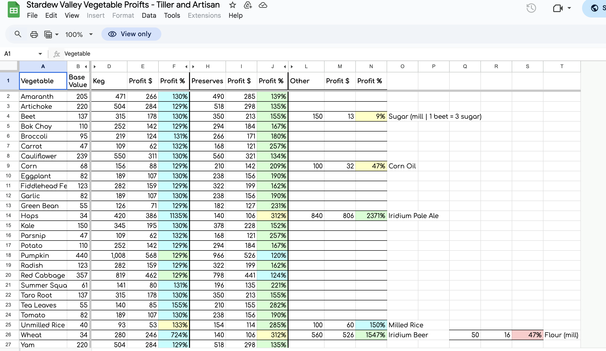

Beyond the Game - Resources
There's a lot that goes on into playing Stardew Valley. Here are some resources you can use to keep yourself organized!
Stardew Farm Planner

The Stardew Planner website allows you to plan out the layout of your farm. You can plan out how many tiles to till, how many seeds of different crops to buy, and where to place your farm buildings. This site is especiall useful in cooperative playing, where you have a limited amount of farm space and multiple players in one farm.
Perfection: Stardew Valley Perfection Tracker Notion Template
Stella Jo on Notion's Stardew Valley Perfection Tracker tracks how close you are to perfection - a late-game metric in the game. Once you finish the main story, you will strive for "perfection" in the game, which is where this template comes in handy.
Perfection: Stardew Checkup
This is another "perfection" tracker, where you upload a copy of your game file and see your status on perfection. MouseyPounds on Github created the Stardew Checkup site.
Perfection: Excel Template
This is the last perfection resource Granny will introduce you to today. User it's_ino on Reddit created an excel sheet with all the objectives to complete in order to reach perfection. The format is simple - you check off what you have completed. There are different tabs categorized by Shipping, Cooking, Gifts, Crafting, Fishing, Bundles, and Quests.
Profit Tracking Excel Template
